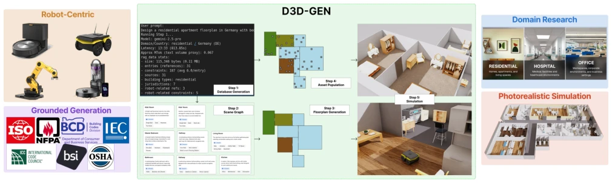
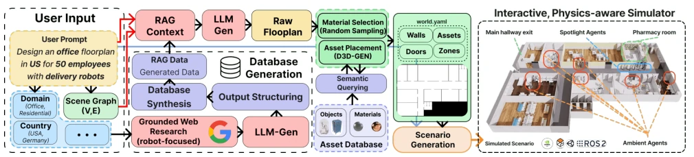
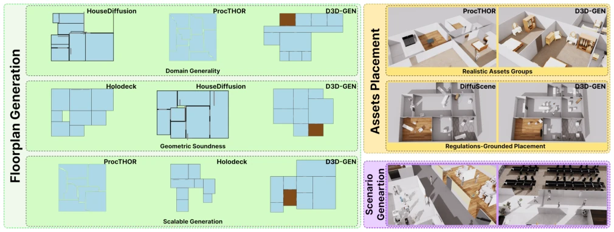

D3D-GEN: Robot-Aware Domain-Grounded Interactive 3D World Generation for Social Robotics
Anh Duc Do, Volodymyr Scherbyna, Tai Duc Nguyen, Spaarsh Thakkar, Zhengcheng Shen, Teham Buiyan abspdf
论文点评Review
这篇论文给具身智能的“造梦工厂”加了把锁，锁名叫“领域知识”。D3D-GEN 最大的亮点在于它不再盲目生成，而是先像个律师一样去查法规（比如医院走廊多宽、机器人充电桩留多少米），再画图纸。这比那些只懂“看起来像”的扩散模型强多了，至少机器人撞墙的概率降低了。但吐槽一下，它依然依赖现成的 3D 资产库，如果我要生成一个“赛博朋克风格的太空站”，现有的资产库可能不够用，还得靠人工补货。而且那个自动爬网生成数据库的过程，万一爬虫抓到了假新闻，生成的规则是不是也假？不过对于社会机器人训练来说，这确实是个务实的进步，至少比那些生成出来没法跑物理引擎的“纸片世界”强，为 Sim2Real 提供了新的思路。
This paper adds a lock to the "dream factory" of embodied intelligence, named "domain knowledge". The biggest highlight of D3D-GEN is that it no longer generates blindly, but first checks regulations like a lawyer (e.g., how wide hospital corridors are, how many meters to leave for robot charging stations), and then draws blueprints. This is much better than diffusion models that only know "looks like", at least reducing the probability of robots hitting walls. However, a critique is that it still relies on existing 3D asset libraries; if I want to generate a "cyberpunk-style space station", the existing asset library might not be enough, and manual supplementation is still needed. Moreover, in the process of automatically crawling the web to generate the database, if the crawler catches "fake news", are the generated rules also fake? However, for social robot training, this is indeed a pragmatic improvement, at least better than those "paper-thin worlds" generated that cannot run physics engines, providing new ideas for Sim2Real.
The biggest pain point in embodied intelligence training is that simulation environments are too "fake" or too "generic". Existing methods either generate uniform rectangular rooms like ProcTHOR [4], lacking semantic constraints of the real world; or rely on static datasets like 3D-FRONT [3], unable to cover regulatory requirements for specific scenes like hospitals, offices, etc. Worse still, many generative methods (such as DiffuScene [6]) only pursue visual realism, ignoring physical feasibility and robot operation constraints (such as charging areas, corridor width). This leads to trained models having extremely poor generalization capabilities when deployed in reality, facing non-residential scenes (such as hospital wards) [2]. D3D-GEN attempts to solve this "domain landing difficulty" problem by introducing domain knowledge (Domain Grounding) to ensure the generated environment complies with human norms and meets robot operation requirements, thereby narrowing the Sim2Real gap [1], so robots no longer experience "maladjustment" in the virtual world.

Fig. 1: D3D-GEN is a novel domain-generalized approach to 3D world generation for embodied AI deployment. The system first gathers domain knowledge into a database with legal regulations and conventions, then a user prompt is grounded in the database. A room-level scene graph is constructed with semantic nodes and adjacency edges, along with the preliminary assets of the room. The system then generates room polygons satisfying spatial and connectivity constraints, then places assets according to the rules from the database. This pipeline results in an unlimited amount of realistic, logically sound worlds. The resulting world is simulable and can be loaded in Isaac Sim and Gazebo for robotic simulation.
方法Method
整体流程分为三个阶段：领域数据库构建、世界生成、场景生成。首先，系统根据用户提示（如“医院”、“美国”）自动进行网络研究，提取法规、空间规范及机器人约束（如充电半径），构建结构化数据库。这是核心创新，将非结构化知识转化为可查询的 RAG 上下文。其次，Text-to-Graph 模块将自然语言转为场景图，定义房间节点和邻接边，并注入机器人语义（如清洁区、服务通道）。接着，Floorplan 生成阶段利用 RAG 检索到的约束（如房间面积范围、门宽）指导 LLM 生成符合物理规则的 2D 多边形。最后，Asset Population 阶段基于资产库和语义匹配，将 3D 模型放置到房间中，确保无碰撞且符合功能逻辑。整个过程通过 RAG 机制，将领域知识动态注入生成过程，确保输出可直接加载至 Isaac Sim 或 Gazebo，实现了从自然语言到物理仿真环境的端到端转换。
The overall process is divided into three stages: domain database construction, world generation, scene generation. First, the system automatically conducts web research based on user prompts (e.g., "hospital", "USA"), extracting regulations, spatial specifications, and robot constraints (e.g., charging radius), to construct a structured database. This is the core innovation, transforming unstructured knowledge into queryable RAG context. Second, the Text-to-Graph module converts natural language into a scene graph, defining room nodes and adjacency edges, and injecting robot semantics (such as cleaning zones, service corridors). Next, the Floorplan generation stage uses constraints retrieved by RAG (such as room area ranges, door widths) to guide the LLM to generate 2D polygons that comply with physical rules. Finally, the Asset Population stage places 3D models into rooms based on the asset library and semantic matching, ensuring no collisions and compliance with functional logic. The entire process dynamically injects domain knowledge into the generation process through the RAG mechanism, ensuring the output can be directly loaded into Isaac Sim or Gazebo, achieving an end-to-end conversion from natural language to physical simulation environments.

Fig. 2: System Design: Overview of the end-to-end Prompt-to-Simulator Workflow that transforms a natural language prompt into an executable, physics-aware multi-agent simulation. The pipeline consists of three tightly coupled stages: database generation (domain agent), world generation, and scenario generation. The user provides a prompt together with lightweight structural metadata, including a domain label (Residential, Office, Hospital, ...), a jurisdiction/country tag (e.g., USA, Germany), and an optional scene graph encoding room nodes and adjacency edges. A retrieval-augmented generation (RAG) component conditions all downstream generation by constructing a domain-specific knowledge base: grounded, robot-focused web research is synthesized and structured by an LLM into a deduplicated
The authors generated 450 scenes (150 each) in three domains: residential, office, and hospital, comparing baselines such as HouseDiffusion, Holodeck, and ProcTHOR. Quantitative metrics include object count, density, spacing, Layout-FID, etc., while qualitative evaluation includes visual quality and VQA accuracy. Results show that D3D-GEN outperforms baselines in object density, spacing, and scene scoring, especially in hospital scenes, where its generated corridors and charging areas comply with domain specifications, while baselines often exhibit door position errors or unreasonable spaces. Ablation experiments indicate that introducing domain constraints significantly improved the rationality of the layout. However, evaluation mainly relies on automatic parsing and Gemini scoring, lacking end-to-end verification of real robot deployment, and the limited coverage of the asset library remains a bottleneck; future work needs to expand asset generation capabilities.
其他图片Other Figures

Fig. 5: Qualitative comparisons. The same prompt is used for generating scene graphs, across three domains (Hospital, Residential, Office). For the Floorplan Generation task, the same scene graph is used for each baseline compared with D3D-GEN. D3D-GEN excels on failure modes of baselines (wrong or no positioning of doors, coordinates not according to actual rules, scalability with increasing number of rooms). The same output of the Floorplan Generation pipeline WorldDescription object is used for the Asset Placement task. D3D-GEN has better object handling and grouping, as well as better knowledge of assets rotation with respect to walls and room boundaries. Robot charging rooms and clearance zones were designated only by D3D-GEN, marked in brown. Scenario Generation outputs Human-Robot i